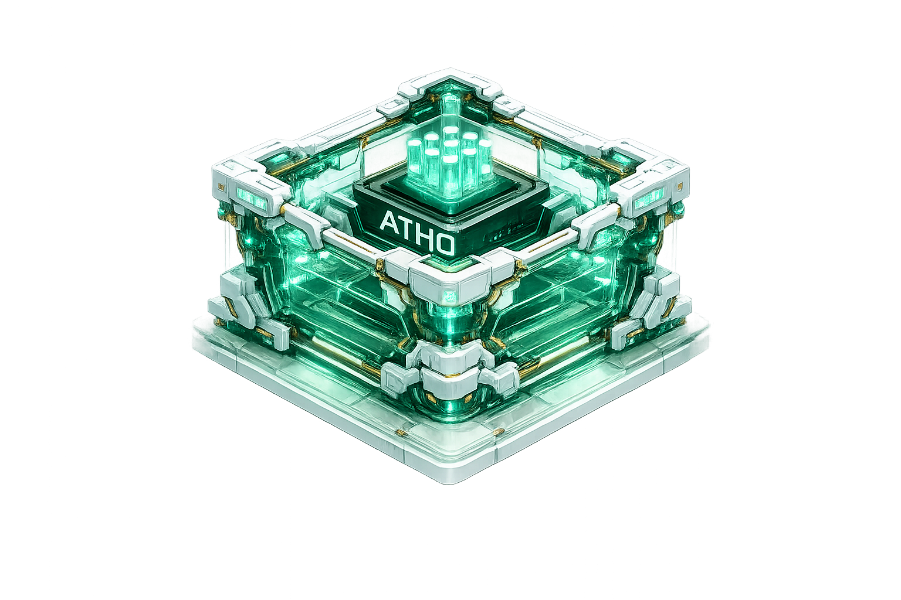

Atho
A post-quantum proof-of-work payment network for simple, secure, low-fee settlement.
Open docs for wallet, mining, node, and setup details.
Tap the engine. It settles back when idle.

Current Testnet Feed
Live testnet stats, refreshed from the selected Atho API.
Loading live testnet stats...
Core Network Design
Three things matter most at a glance. The fuller explanation stays in the docs.
Open the docs when you want the deeper network model.
Choose the Right Network
Mainnet, testnet, and regnet stay separate by design. Pick the mode that matches the work you need to do.
Ports, replay isolation, storage behavior, and testing flow are documented in one place.
Read, Explore, or Join Testnet
Keep the homepage simple. Open the page that matches what you want to do next.
Go straight to live chain data, then open docs for setup and reference.
Use the explorer for activity, then use docs for wallets, mining, nodes, and testnet setup.